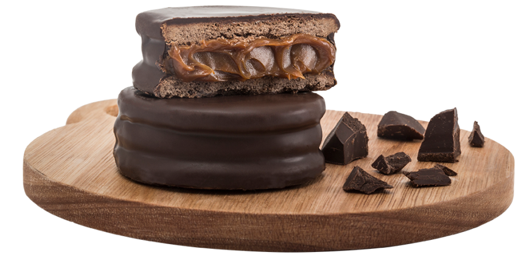
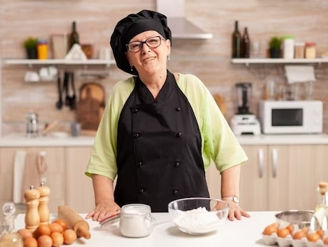

En 1988 Marta Preto, una
especialista pastelera,
y Jorge Mignon, un administrador de empresas, decidieron unir sus talentos y crear una panadería
que ofreciera productos de alta calidad y sabor excepcional.
Desde un comienzo se decidió utilizar solo los
mejores ingredientes y
técnicas de
horneado para producir panes, pasteles, galletas y otros productos horneados que superaran las
expectativas
de nuestros clientes. Gracias a la pasión por la excelencia y el enfoque en la satisfacción del
cliente,
Delicias,
rápidamente se convirtió en un éxito en la comunidad local.
En la actualidad sigue siendo un negocio
familiar, dirigido por los hijos de Marta
y Jorge,
quienes conservan la tradición de excelencia y pasión por la panadería.

Marta Preto - Jorge Mignon
